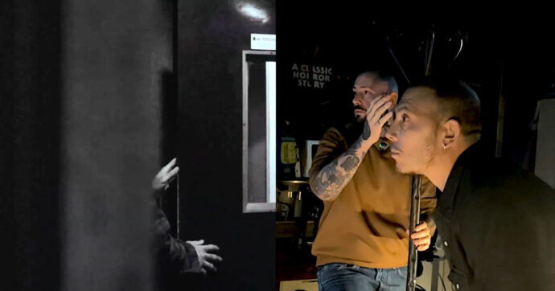

L'importanza invisibile: Volume, Altezza e Timbro
Spesso pensiamo al cinema come a un'arte puramente visiva, ma il suono ha un potere enorme: può guidare attivamente il nostro occhio e cambiare completamente il significato di un'immagine. Un'inquadratura di un bosco tranquillo diventa terrificante se aggiungiamo il suono di rami spezzati e un respiro affannoso.
I tre pilastri fisici del suono sono il Volume (la forza del suono, spesso usata per spaventare o enfatizzare), l'Altezza (suoni acuti per la tensione, suoni gravi per il pericolo o la potenza) e il Timbro. Il timbro è la "texture" del suono: è ciò che ci fa distinguere la voce calda e nasale di un personaggio da quella metallica di un robot, rendendo l'esperienza uditiva realistica.
